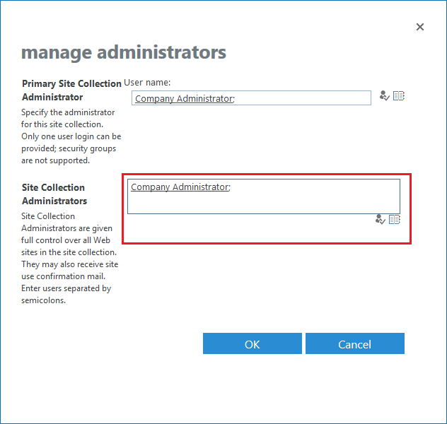

Overview
This article describes how to configure site collection permission to run SharePoint
(SPAA) scans. Without the proper site collection permission, the scan will fail with the
401: Unauthorized error.
Instructions
-
Establish the account used to scan SharePoint sites. Alternatively, establish the account to be used for scans.
-
Sign in to Microsoft 365 with an account that can access the Microsoft 365 admin center.
-
In the left navigation pane, under Admin Centers, select SharePoint.
-
Select the checkboxes for the sites you'd like to grant access.
NOTE: You can only add the account to one site at a time.
-
Click Owners > Manage Administrators.
-
Add the account configured in the SPAA scan job to access sites to the Site Collection Administrators field.
 -
Click OK to save changes.